General
- A small country located in the heart of the Balkans, located in between Serbia, Albania, Montenegro, and North Macedonia. From a modern geopolitical lens, it was fascinating to visit. It is also an easy to add a few days another country to visit Kosovo. Kosovo was also by far the cheapest place I've been in Europe with breakfast for 3 euros and a fancy dinner 8 euros
-
Controversy - The country remains at the heart of a lot of controversy and is a product of the Balkan Wars in the 1990's. Kosovo only declared independence in 2008. Despite being autonomously governed, Serbia claims that Kosovo is part of their territory and was taken from them by NATO bombings in the 1990s. This has caused a lot of international tensions including Kosovo only being recognized as a country by 110 out of 197 U.N. member states
- The list of countries that don't recognize Kosovo includes some important global players like Spain, Greece, China, India and Brazil
- It is also one of the most pro-American places you'll ever visit. There were U.S. flags everywhere, streets named after Bill Clinton and random U.S. senators. One of the only places in the world where people are actually excited to see Americans
- Border with Serbia - The border with Serbia is one-way. You can enter Kosovo from Serbia, but can't return the opposite way without crossing into another neighboring country. It depends on the border guard, but be careful entering Serbia if you only have only have a Kosovo stamp in your passport without a Serbian stamp
- Safety - despite the controversy and on-going tension with Serbia, Kosovo felt very safe. The country was suprisingly more modern than I expected due to lots of European investment. There are also constant patrols of KFOR NATO peacekeeping troops stationed there to prevent any ongoing border disputes. My experience felt the same as visiting any other European country
- Time - It only takes a maximum of 3 hours to drive across Kosovo so you only need limited time to visit this tiny country. I would recommend 3 - 4 days total to explore the entire country: a half day in Prishtina, two days in Prizren and tack on a day to visit Peja or Gjakova as a bonus
Suggested Route Overview
Prishtina
Half day recommended- Prishtina is the capital and the largest city in Kosovo with over 200,000 inhabitants. The city is very modern and a key transit hub while traveling in Kosovo. Prishtina isn't very touristy, but there are some quirky sites that are worth seeing
- Most of the sites are located close together so a half day is enough to cover the key highlights
What to Do
- Bill Clinton Statue — most people are shocked and amused to find a larger-than-life statue of Bill Clinton in the middle of Kosovo. Located on Bill Klinton Boulevard in front of a communist-era building, the statue has a bizzare "Welcome to Prishtina" poster with Bill Clinton similing in the background. The statue was built in honor of his support in NATO of the bombings in 1999 which helped found Kosovo
- You'll find a lot of American flags throughout the country and there's also a bust of Kansas Senator Bob Dole not too far away from the Bill Clinton Statue
Bill Clinton, Hero of Kosovo
- Kosovo National Library — the national library stands out in the middle of the city as a wild brutalist building with boxy shapes, white hexagonal domes and metal netting on the exterior. There is a small exhibit dedicated to the little-known Kosovo War which took place in the late 1990's. Inside there's also an America Corner with a merged U.S./Kosovo flag and Bill Clinton's biography
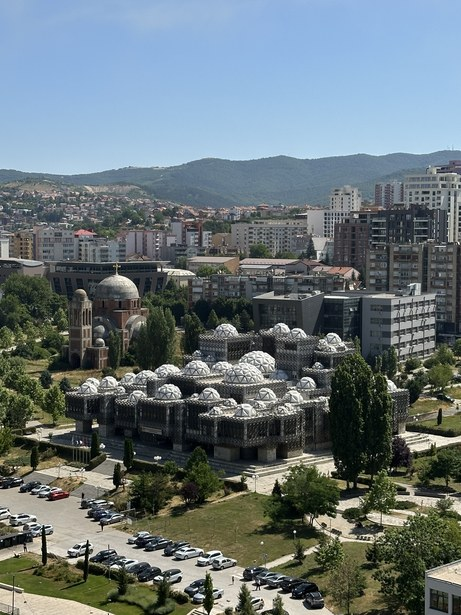
- Mother Teresa Church & Bell Tower — the largest church in Prishtina is dedicated to Mother Teresa who was Kosovar - Albanian by heritage. The church is pretty and make sure you don't miss the bell tower which has one of the best views in the city
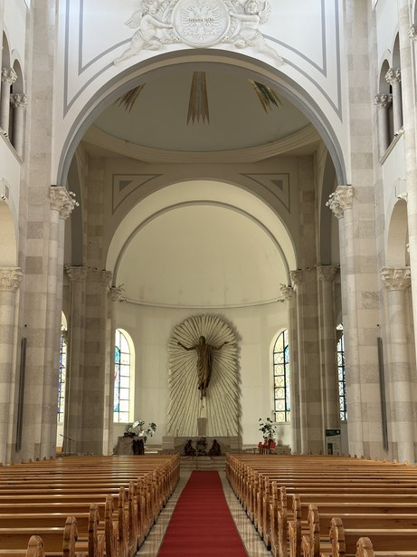
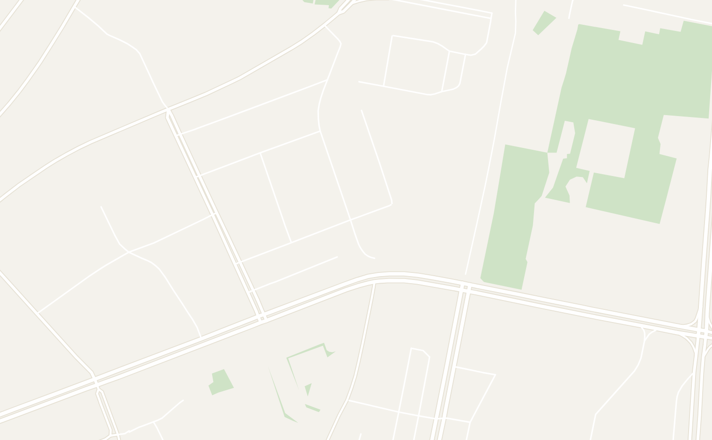
Prizren
2 days recommended- Prizren is the cultural capital of Albanian and the real reason to come to Kosovo. It is home to a small Ottoman old town with a beautiful river flowing through, a fortress with incredible views and a genuinely great vibe at night
- The old town is relatively small, but packed with different attractions. It is worth spending at least a night here to get a sense of the culture of Kosovo. I really enjoyed the pace of life here. The town square was buzzing with locals filling the cafes and bars at night, even on a weekday
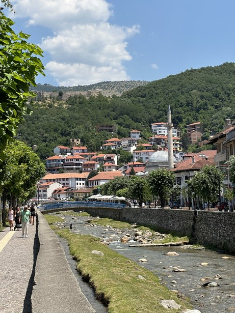
What to Do
- Prizren Fortress — overlooking the town is the Prizren Fortress. It is a steep walk (roughly 20 minutes) up a cobblestone hill, but the view from the top is well worth it. Go at sunset, bring a beer and enjoy the views
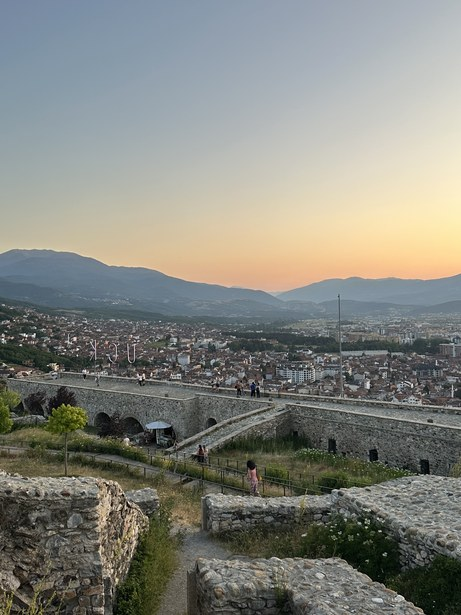
- Shatërvan (Town Square) - this is the center of old town. Sit here in the morning and sip a coffee or enjoy in the evenings when locals fill the square and the city comes alive at night
- Free walking tour — I highly recommend a free walking tour. The local guide that I had took us to all the important historical sites, taught us about history of Kosovo and was very candid about the on-going tensions in the country. This tour was especially informative in Kosovo given political tensions and dispute with Serbia
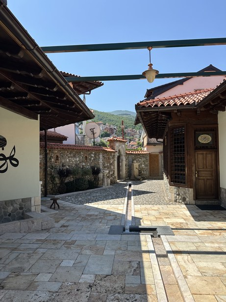
- Albanian League of Prizren — this is where Albanian independence from the Ottoman empire was first organized. It is a small, well-maintained complex with a small museum of traditional Albanian outfits and nationalist paintings
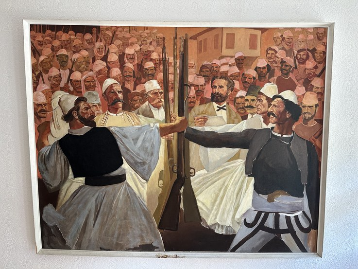
- Sinan Pasha Mosque — the main mosque in Prizren located right next to the river. It has an Art Deco-style painted walls inside and a hidden Star of David. The architectural style is unusual compared to other mosques in the region
- For a nice view and photo spot, head to the Old Stone Bridge where there is a beautiful view of the mosque and river
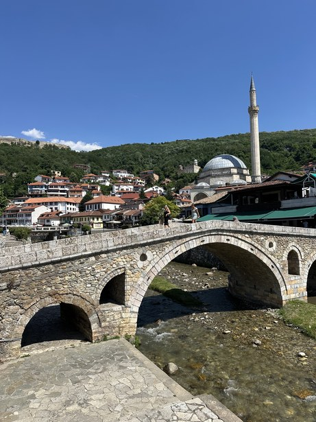
- Serbian Orthodox Cathedral of St. George — a historic cathedral in Prizren that is often visited by Serbians. It was attacked during riots in 2023 and was guarded by police 24/7 when I was there. It is worth seeing to understand the tensions
- Agim (Avdi) Shala monument - one of the many military statues you'll find along the river. These militaristic statues were very common in Kosovo
- Archaeological Museum — a small museum with some old prehistoric, Roman and Ottoman artifacts. There is also a clock tower you can climb with a view of the city. Only worth going if you have extra time
Where to Eat
- Steakhouse Sarajeva — a fancy restaurant by the water that was surprisingly cheap. Get the Balkan burger here! It was one of the best things I had in Kosovo
- Restaurant Te Syla — a traditional Albanian restaurant by the river. Get the Qebap (their name for Cevapi)
- Te Kinezi — a great spot to sit outside and enjoy the local craft beer. A great spot to meet locals at night
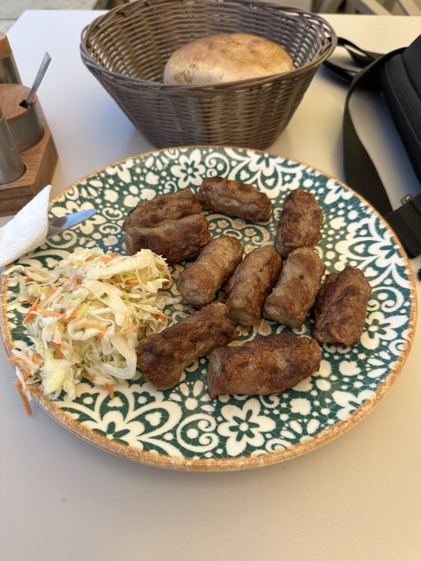
A wonderful plate of Cevapi
Where to Stay
- Ura Hostel - an amazing brand new hostel located right in old town
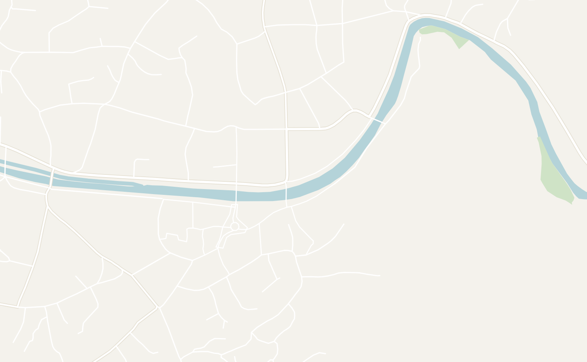
ATTRACTIONS
1Prizren Fortress 2Shatërvan (Town Square) 3Albanian League of Prizren 4Serbian Orthodox Cathedral of St. George 5Agim (Avdi) Shala monument 6Archaeological Museum
RESTAURANTS & BARS
7Te Kinezi
ACCOMMODATION
8Ura Hostel
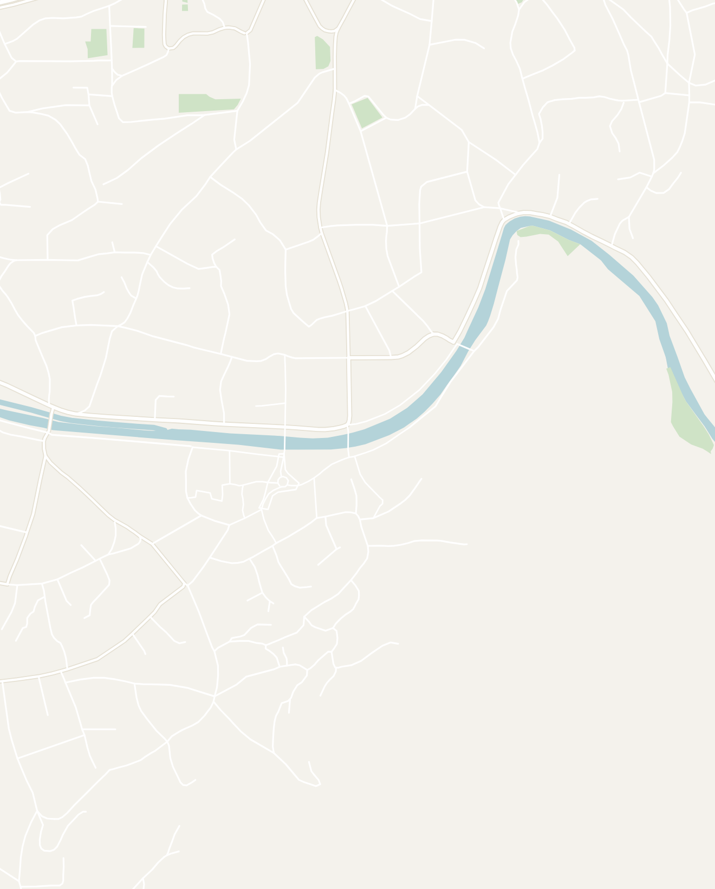
Kosovo
Prizren
Touch to explore
Double-tap to open in Google Maps
Double-tap to open in Google Maps
Other Places to Consider
- Peja — a town with great nature and hiking located near Montenegro (more detailed guide here)
- Gjakova – a small town close to the Albania border with an old bazaar and traditional Ottoman architecture (more detailed guide here)
- Mitrovica – a highly contested town in Northern Kosovo. The Albanian and Serbian neighborhoods are located on opposite sides of the river and there are high ethnic tensions here. It is a fascinating place, but be careful if you visit